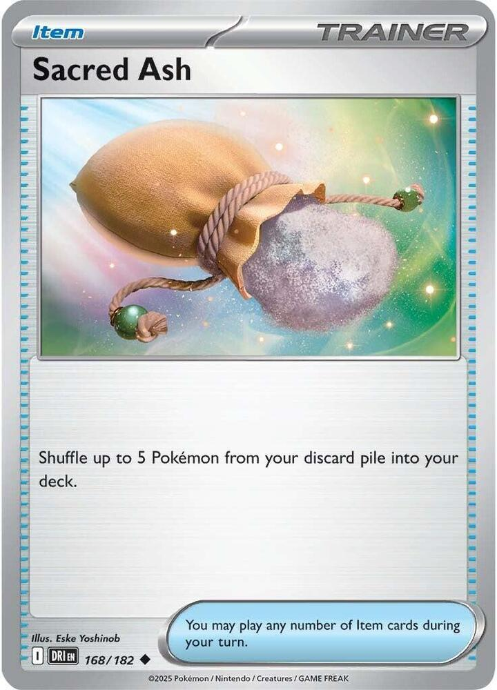

x4
x4 x4
x4 x3
x3 x3
x3 x2
x2
 x3
x3 x2
x2 x3
x3 x3
x3 x2
x2 x2
x2![Boss's Orders [Ghetsis]](./assets/654453_bosss-orders-ghetsis.jpg)
 x4
x4 x3
x3 x2
x2 x2
x2


 x2
x2 x10
x10 Gengar Gang: Dead on Arrival
Gengar Gang: Dead on Arrival 

Every Mega in the format stands on a body that one Chaotic Pain kills
← back to all decks
The format is built on Mega Evolution Pokémon ex. They carry 330 to 380 HP, they hit for 270 and up, and nothing in this deck beats one in a damage race. The deck does not try. It kills them before they exist.
Chaotic Pain costs  and places 13 damage counters on 1 of your opponent's Pokémon. Any Pokémon, Active or Benched, your choice. Placing counters is not dealing damage, and everything that matters about this card follows from that one distinction.
and places 13 damage counters on 1 of your opponent's Pokémon. Any Pokémon, Active or Benched, your choice. Placing counters is not dealing damage, and everything that matters about this card follows from that one distinction.
Every Mega in Standard has to grow out of something, and 130 kills all of them.
| Their Mega | Grows from | HP | One Chaotic Pain |
|---|---|---|---|
| Mega Lucario ex | Riolu | 80 | ✓ |
| Mega Excadrill ex | Drilbur | 70 | ✓ |
| Mega Greninja ex | Froakie, Frogadier | 70, 100 | ✓ |
| Mega Charizard X ex | Charmander | 80 | ✓ |
| Mega Venusaur ex | Bulbasaur, Ivysaur | 80, 110 | ✓ |
| Mega Gardevoir ex | Ralts, Kirlia | 70, 100 | ✓ |
| Mega Chandelure ex | Litwick, Lampent | 70, 90 | ✓ |
| Dragapult ex | Dreepy, Drakloak | 70, 90 | ✓ |
Two Energy, from the Bench, once a turn, and the 380 HP problem never arrives. A Mega they cannot deploy is a three-Prize card sitting dead in their hand.
Almost nothing in the format stops it. A sweep of the whole legal pool for damage prevention comes back near unanimous: the text reads prevent all damage, and damage counters walk through all of it.
Five cards in all of Standard actually stop it, and only one is common. See Risky Ruins.
The other half of the deck is the price of dying. Shadowy Concealment discounts every knockout an opposing Pokémon ex scores on you, and Fainting Spell flips a coin at whatever killed your Gengar. Between them your losses cost one Prize and theirs cost two or three.
| Attacker | Cost | Output | Prizes it pays |
|---|---|---|---|
| Gengar ex, Chaotic Pain | | 130 as counters, any target, through any wall | 1 |
| Gengar, Mind Jack | | 10 plus 30 per Benched Pokémon | 0 |
| Mega Gengar ex, Void Gale | | 230, and 460 into a Psychic Pokémon | 2 |
| Okidogi ex, Chain-Crazed |  | 260 while Poisoned | 1 |
x4x4x3x3x2x3x2x3x3x2x2x4x3x2x2
x2x10Pokémon (22)
| Qty | Card | Set | Number | Reg |
|---|---|---|---|---|
| 4 | Okidogi ex | Shrouded Fable | 036 | H |
| 4 | Gastly | Perfect Order | 048 | J |
| 3 | Haunter | Phantasmal Flames | 055 | I |
| 3 | Gengar ex | 30th Celebration | 090 | J |
| 2 | Mega Gengar ex | Phantasmal Flames | 056 | I |
| 1 | Gengar | Perfect Order | 050 | J |
| 3 | Toxel | Phantasmal Flames | 067 | I |
| 2 | Toxtricity | Phantasmal Flames | 068 | I |
Trainers — Supporters (11)
| Qty | Card | Set | Number | Reg |
|---|---|---|---|---|
| 3 | Lillie's Determination | Mega Evolution | 119 | I |
| 3 | Dawn | Phantasmal Flames | 087 | I |
| 2 | Janine's Secret Art | Shrouded Fable | 059 | H |
| 2 | Team Rocket's Petrel | Destined Rivals | 176 | I |
| 1 | Boss's Orders | Mega Evolution | 114 | I |
Trainers — Items (15)
| Qty | Card | Set | Number | Reg |
|---|---|---|---|---|
| 4 | Rare Candy | Mega Evolution | 125 | I |
| 3 | Switch | Mega Evolution | 130 | I |
| 2 | Buddy-Buddy Poffin | Temporal Forces | 144 | H |
| 2 | Energy Recycler | Destined Rivals | 164 | I |
| 1 | Sacred Ash | Destined Rivals | 168 | I |
| 1 | Night Stretcher | Shrouded Fable | 061 | H |
| 1 | Energy Switch | Mega Evolution | 115 | I |
| 1 | Prime Catcher | Prismatic Evolutions | 119 | H |
Trainers — Tool & Stadium (2)
| Qty | Card | Set | Number | Reg |
|---|---|---|---|---|
| 2 | Risky Ruins | Mega Evolution | 127 | I |
Energy (10)
| Qty | Card | Set | Number | Reg |
|---|---|---|---|---|
| 10 | Basic Darkness Energy | Mega Evolution Energies | 007 | - |
22 + 11 + 15 + 2 + 10 = 60. ✓ Eleven Basics, eleven Supporters, one ACE SPEC, nothing over four copies.
Eleven Basics is a 22.2% mulligan. The opening seven holds an Okidogi plus an Energy 27.9% of the time and an Okidogi or a Toxel 60.1% of the time, which are the two openers the deck wants.

 Darkness
Darkness Fighting ×23
Fighting ×23 legal (Reg H)Poisonous Musculature - Search your deck for up to 2 Basic Darkness Energy cards and attach them to this Pokémon. Then, shuffle your deck. If you attached Energy to a Pokémon in this way, this Pokémon is now Poisoned.Chain-Crazed (130+) - If this Pokémon is Poisoned, this attack does 130 more damage.
legal (Reg H)Poisonous Musculature - Search your deck for up to 2 Basic Darkness Energy cards and attach them to this Pokémon. Then, shuffle your deck. If you attached Energy to a Pokémon in this way, this Pokémon is now Poisoned.Chain-Crazed (130+) - If this Pokémon is Poisoned, this attack does 130 more damage.250 HP Basic, Fighting Weakness, Retreat 3. The guard dog, and the name is the job. It is not the win condition any more, and it does not need to be.
What makes it the shield is that it needs nothing. It is a Basic, so it never waits on a Gastly, a Haunter, or a Rare Candy. It self-starts: Poisonous Musculature costs one Colorless, searches two Basic Darkness Energy out of the deck, attaches them here, and Poisons this Pokémon. One Energy in hand turns into a dog holding three and already Poisoned.
That gives it two jobs, and both are about buying the ghost line time.
Lead with it. Going second, an Okidogi and one Energy is a real first turn, and turn two it swings 260 while the first Gastly is still becoming something.
Or hold it back and jump it out mid-game. When a Gengar dies and the replacement is not built yet, the Bench usually holds a Gastly and nothing that can attack. A 250 HP Basic that arms itself from an empty board covers that turn. That is the difference between losing tempo and losing the game.
Chain-Crazed does 130, and 130 more if this Pokémon is Poisoned, so 260. That is enough for most single-prize bodies and most Pokémon ex, and short of every Mega. Do not expect it to solve a 340 HP problem; that is Gengar's job.
Poison persists, and leaving the Active Spot ends it. Once the dog is Poisoned it stays Poisoned as long as it stays Active, so Chain-Crazed keeps hitting 260 with no further help. Retreat it, Switch it, or let them gust it, and you are back to 130 until Janine restores it. The dog wants to stand still. Rotate the ghosts around it.
Four copies. It carries the Basic count, it opens, and it is the only attacker here that does not queue behind a Stage 2.


 DarknessFighting ×21legal (Reg J)Surprise Attack (30) - Flip a coin. If tails, this attack does nothing.
DarknessFighting ×21legal (Reg J)Surprise Attack (30) - Flip a coin. If tails, this attack does nothing.70 HP keeps it inside Buddy-Buddy Poffin range, and it is Darkness, so Risky Ruins never touches it and Janine can attach to it.
Four copies, and it is the single highest-leverage count in the deck. Six Stage 2 cards sit on top of this one Basic. Every Gengar you build spends a Gastly, and the plain Gengar spends another every time it comes back. Only a Gastly in the deck can be searched, so the deck wants as many as the rules allow, and Sacred Ash is what puts the spent ones back where Dawn and Poffin find them.
Bench one on turn one whether or not you need it. Rare Candy cannot be played on a Basic that arrived the same turn, so turn one's Gastly is turn two's Gengar.


 DarknessFighting ×21legal (Reg I)Spooky Shot (40)
DarknessFighting ×21legal (Reg I)Spooky Shot (40)Three copies, and the reason is Energy rather than insurance.
Rare Candy is the speed route and it lands the Stage 2 a turn early, but it lands it empty. The Haunter route is the Energy route. Sinister Surge only ever reaches the Bench, and a benched Haunter is a legal target, so two Surges load a Haunter that then evolves into a Gengar ex already holding , ready to attack the moment it is promoted.
Use Candy when you need a Gengar now. Use Haunter when you need one armed. Nothing here wants to attack with a Haunter itself.
DarknessFighting ×22legal (Reg J)Chaotic Pain - Place 13 damage counters on 1 of your opponent's Pokémon.Stage 2 from Haunter, 280 HP, Retreat 2. 30th Celebration 090, regulation mark J. The deck.
Chaotic Pain costs and places 13 damage counters on 1 of your opponent's Pokémon. The Thesis covers what that does to the format's Megas. Beyond the cradles, 130 one-shots the support layer wherever it hides:
| Target | HP | |
|---|---|---|
| Budew | 30 | the Item lock |
| Dusclops | 90 | |
| Munkidori | 110 | |
| Slowking | 120 | |
| Alakazam | 140 | with 20 from Risky Ruins |
| Crustle | 150 | with 20 from Risky Ruins |
280 HP is the other half of why this card works. It survives the attacks the format repeats: Mega Lucario's Aura Jab at 260 after Weakness, Blaziken ex's Smolder-sault at 200, Dragapult's Phantom Dive at 200. It dies to the big swings, and that is fine, because of the Ability.
Fainting Spell: if this Pokémon is Knocked Out by damage from an attack, flip a coin; if heads, the Attacking Pokémon is Knocked Out too. Under Concealment this body costs one Prize and takes a fifty percent shot at something worth two or three. A damaged Gengar ex facing a Pokémon ex should usually stand and die rather than retreat; the arithmetic is in The Prize Tax.
Three copies, because this is the card that attacks, and therefore the card that dies.
DarknessFighting ×22legal (Reg I)Void Gale (230) - Move an Energy from this Pokémon to 1 of your Benched Pokémon.Stage 2 from Haunter. 350 HP. Gives up 3 Prizes, or 2 once its own Ability applies to it.
Shadowy Concealment: any Darkness Pokémon of yours knocked out by an attack from an opponent's Pokémon ex costs that player one Prize. It covers your whole board including this card, and it works from the Bench, which is where it belongs. A 350 HP body on the Bench is very hard to remove, and the Ability does not care whether it ever attacks.
It is insurance, not the plan. The tax pays out when their Pokémon ex knock yours out, and the rest of this deck exists to stop their best Pokémon ex ever getting built. The better the denial game goes, the less Concealment does; in the games where denial fails it is the reason you are still alive. Build it early, park it, and forget about it.
The effect does not stack, so run one on the board and never two. A second copy in play is two more Prizes in the open for no benefit. The second copy in the deck covers the first being prized or dead.
Void Gale does 230 and moves an Energy from this Pokémon to a Benched Pokémon. That clause is a ferry: promote the Mega with Switch, swing, and the Energy lands on whatever you are arming next. Against Psychic Pokémon, Weakness doubles it to 460, the one number in the deck Chaotic Pain cannot reach, because counters ignore Weakness in both directions.

 DarknessFighting ×21legal (Reg J)Mind Jack (10+) - This attack does 30 more damage for each of your opponent's Benched Pokémon.
DarknessFighting ×21legal (Reg J)Mind Jack (10+) - This attack does 30 more damage for each of your opponent's Benched Pokémon.Stage 2 from Haunter, 130 HP, no Rule Box. The wildcard, and the cheapest damage in the deck.
Mind Jack costs one Darkness Energy and does 10, plus 30 for each Pokémon on your opponent's Bench.
One Energy, from a body that pays zero Prizes under Concealment. It is the attacker for the two rooms the rest of the deck struggles in: a single-prize opponent, where Concealment is blank, and Neutralization Zone, where your ex cannot damage anything without a Rule Box.
Infinite Shadow: if an attack knocks it out, it goes to your hand instead of the discard. Everything under it is discarded, so each rebuild spends a Gastly, but the Gengar itself never runs out.
Mind Jack and Chaotic Pain pull against each other, because sniping their Bench shrinks the Bench Mind Jack counts. Pick a lane per turn.
DarknessFighting ×21legal (Reg I)Call for Family - Search your deck for up to 2 Basic Pokémon and put them onto your Bench. Then, shuffle your deck.Playful Kick (20)Call for Family searches two Basic Pokémon out of the deck and benches them for one Darkness Energy. That is a Buddy-Buddy Poffin on a stick, and it reaches Okidogi ex, which Poffin cannot at 250 HP. The two share the setup, which is why the deck runs two Poffin rather than four.
Three copies. It is the turn-one attack going second when no dog showed up, it holds the Basic count, and it is a zero-Prize body on the Bench.
DarknessFighting ×22legal (Reg I)Gentle Slap (100)Sinister Surge attaches a Basic Darkness Energy from the deck to a Benched Darkness Pokémon once a turn, and puts two damage counters on it. It is an Ability, so it accelerates on turns when your Supporter is busy.
Point it at a benched Haunter and evolve that Haunter into an armed Gengar ex, or at the Okidogi you plan to promote.
Two copies, because each copy's Surge is its own once-per-turn and the card carries no "you can't use more than one" clause. Gentle Slap does 100 for three and is the emergency attack when nothing else is armed.
 legal (Reg I)
legal (Reg I)Shuffle your hand into your deck and draw six, or eight while you still hold all six Prizes. Three copies, and it is the entire draw package.
Because of the eight-card mode, play it early rather than saving it. Before you take your first Prize it is the biggest single card in the deck, and it is what turns a one-Basic, no-Energy opening hand into a real board.
The cost is real in a deck that plans two turns ahead, since Lillie's throws away the pieces you were holding along with the dead ones. Every conditional draw Supporter in this colour is gated on discarding Pokémon without a Rule Box, which are exactly the cards you bench on sight, so the condition whiffs when the hand is all ex. Test and Tune has the fourth copy and the always-live alternative.
legal (Reg I)Search your deck for a Basic Pokémon, a Stage 1 Pokémon, and a Stage 2 Pokémon. In this deck that is Gastly, Haunter, and whichever Gengar the matchup wants, or Toxel, Toxtricity, and a Gengar. One card sets up an entire line, and it is the only card that finds a Gengar ex at all, because the Item-speed alternative, Poké Pad, reads "no Rule Box".
Three copies. Six Stage 2 cards on one Basic line makes this the most important Supporter here, and it is the turn-two play in most games.
legal (Reg H)Choose up to two of your Darkness Pokémon, search a Basic Darkness Energy out of the deck for each, attach them, and if one of them was your Active, it is now Poisoned.
One Energy per Pokémon, two different Pokémon, never two on one. The Live client plays it that way and a judge confirmed it. So Janine puts a single Energy on your Active; a manual attachment plus Janine is two, and Chain-Crazed costs three.
It is the only card in the deck that re-Poisons a dog, and that is worth 130 damage rather than one Energy. Poison ends the moment Okidogi leaves the Active Spot, and Poisonous Musculature can only restore it by spending your attack for the turn. Janine restores it and attacks the same turn.
One warning on the opening turn. If your only Darkness Pokémon in play is the Active, Janine attaches one Energy instead of two and Poisons the body you are about to Rare Candy into a Gengar. Damage counters survive evolution even though the Poison does not, so that Gastly arrives as a Stage 2 already carrying 20. With a benched Darkness Pokémon to take the second Energy, that cost disappears.
Two copies.
 legal (Reg I)
legal (Reg I)Search your deck for a Trainer card. Two copies, and it makes every one-of behave like a two-of.
| Holding | Alone | With a Petrel |
|---|---|---|
| Boss's Orders, opening seven | 11.7% | 22.1% |
| Boss's Orders, by turn eight | 25.0% | 44.1% |
It finds the Boss's Orders, the Prime Catcher, the Energy Switch, a Rare Candy, a Switch, and the Energy Recycler, which is the fetch when the Energy pool is what you are short of.
The cost is that Petrel is a Supporter, so fetching another Supporter costs a turn of tempo. Its same-turn targets are the Items and the Stadium; check whether one of those wins the turn before defaulting to Dawn.
legal (Reg I)Drags a Benched Pokémon into the Active Spot. One copy, because Chaotic Pain does most of this job for free. The classic reason to gust is to kill something hiding on their Bench, and Gengar kills it where it stands.
What is left is the case counters cannot cover: dragging a damaged body up for the last Prize, or stranding an attacker they just loaded. A single copy is thin alone; Petrel is the second, and Prime Catcher is the third.
legal (Reg I)Four copies. Six Stage 2 cards over four Gastly and three Haunter, and Candy is the route that lands a Gengar a turn early. Two timing rules decide openings: never on your first turn, and never on a Basic that entered play this turn.
legal (Reg I)Switch your Active Pokémon with one of your Benched Pokémon. Three copies, and in this deck it is an Energy card as much as a mobility card.
Retreating is paid for by discarding attached Energy, and this deck has the highest retreat costs on its own board. Okidogi ex is Retreat 3; both big Gengars and Toxtricity are Retreat 2. Out of a pool of ten Energy, retreating the dog once spends 30% of your fuel for the game, and it spends it from the same pool Sinister Surge, Janine's Secret Art, and Poisonous Musculature all search.
Switch costs a card instead. That is the whole argument, and it is why three sit here while Energy Switch sits at one. Moving the body and moving its fuel are different jobs, and only one has to be free.
It has a second use worth naming: it promotes the parked Mega Gengar ex on the turn you want a 230 swing, without paying two Energy for the privilege.
It clears Poison, so spend it on the ghosts. Rotating a Poisoned Okidogi drops Chain-Crazed to 130 until Janine restores it.
 legal (Reg H)
legal (Reg H)Two Basic Pokémon with 70 HP or less, straight to the Bench. Gastly and Toxel are the only two in the deck, seven targets for two copies, and it is the turn-one play going first.
Poffin cannot reach Okidogi at 250 HP. Toxel's Call for Family can, which is why the count is two and not the four every other list runs.
legal (Reg I)Shuffle up to 5 Basic Energy cards from your discard pile into your deck. Two copies, and it is not optional.
All three accelerators search the deck, so Energy in the discard is not merely spent, it is invisible to the engine. Every knockout buries two or three, every retreat buries as many as the Retreat Cost, and Okidogi drains the deck directly every time it self-arms.
| Buried | Left in the deck | |
|---|---|---|
| Start, 10 Energy less about one prized | 0 | 9 |
| First attacker dies holding three | 3 | 6 |
| Second dies holding three | 6 | 3 |
| Third dies holding three | 9 | 0, and Surge whiffs |
Two copies takes the deck from three fully armed attackers in a game to six. Petrel finds one.
legal (Reg I)Shuffle up to 5 Pokémon from your discard pile into your deck. One copy.
Recovery has to land where the searchers look. Dawn, Buddy-Buddy Poffin, and Rare Candy all read the deck; Night Stretcher returns a card to your hand. Sacred Ash is the only card that refills the pool the search engine fishes in, and it returns dead Gastly and Haunter so the line never runs out, along with a knocked-out Gengar ex so Dawn can find it again.
One copy rather than two, because the Energy side of the discard is the half that actually runs dry.
legal (Reg H)A Pokémon or a Basic Energy card out of the discard pile and into your hand. One copy, and what it does that Ash and Recycler cannot is speed. They put things back in the deck where you still have to find them. Night Stretcher puts one thing in your hand this turn, and the turn that matters is the one after an attacker dies holding three Energy.
legal (Reg I)Moves a Basic Energy from one of your Pokémon to another. One copy.
Sinister Surge only ever reaches the Bench, so this is the pipe that brings that Energy up to the Active. It is also the third Energy on a fresh Okidogi: Janine puts one on the Active and one on the Bench, a manual attachment makes two, and Energy Switch brings the last one up for Chain-Crazed.

 ACE SPEC Rarelegal (Reg H)
ACE SPEC Rarelegal (Reg H)The ACE SPEC. It gusts a Benched Pokémon up and switches your own Active for free, which is two jobs in one card.
The free switch is a fourth rotation on top of three Switch, and the gust half reaches the one thing Chaotic Pain cannot: a Pokémon you want out of the Active Spot rather than dead.
legal (Reg I)Two damage counters on every Basic non-Darkness Pokémon either player benches. Every Pokémon in this deck is Darkness, so it is completely one-sided.
It pays twice. The 20 stays on the card when it evolves, so a chipped Dreepy carries it into the Dragapult ex it becomes, and a chipped Abra or Dwebble is what puts Alakazam at 140 and Crustle at 150 inside one Chaotic Pain.
Two copies, and the second is for the Stadium war. The only way to remove a Stadium is to play one over it, and a Stadium with the same name cannot be played over itself.
legalTen, and the count is deliberately lower than it looks like it should be. Poisonous Musculature, Sinister Surge, and Janine's Secret Art all search the deck, so the only Energy that ever needs to be in your hand is the one manual attachment per turn. Every extra copy drawn is a dead card in a Lillie's refresh. Three Switch and two Energy Recycler are what keep ten honest.

Concealment is worth doing the arithmetic on, because it decides how you build your Bench.
Every Pokémon ex you bench is a hole in the tax. Keep one Mega Gengar ex on the board, at most two other ex, and fill the rest with Gastly, Haunter, Toxel, Toxtricity, and the plain Gengar. The deck runs thirteen zero-Prize bodies, so the seats fill themselves.
Fainting Spell and Concealment combine into a rule that looks wrong and is not. When a damaged Gengar ex faces an opposing Pokémon ex that will knock it out, do not retreat it.
That is around +1 Prize of expected value per death, and it can take their last Benched body with it. Retreating throws away both halves and costs Energy on top. Retreat a Gengar only when you need that specific Gengar alive next turn.

Four sources put Darkness Energy on the board, and only one uses your hand.
| Source | From | To | Costs |
|---|---|---|---|
| Manual attachment | hand | anywhere | your attachment for the turn |
| Sinister Surge | deck | a Benched Darkness Pokémon, once per Toxtricity | nothing, it is an Ability |
| Janine's Secret Art | deck | up to 2 Darkness Pokémon, one Energy each, Poisons your Active | your Supporter |
| Poisonous Musculature | deck | Okidogi ex only, Poisons it | your attack |
Chaotic Pain and Void Gale both cost two, which the engine reaches in a single turn. Chain-Crazed costs three, which needs two sources in one turn or a body that came up pre-loaded.
Three things drain the pool, and only one is a knockout. Energy leaves with any Pokémon that dies, it leaves two at a time when Poisonous Musculature pulls from the deck, and it leaves fastest of all through Retreat Costs, which are paid by discarding attached Energy. Switch exists to keep that bill off the pool, and Energy Recycler exists because the accelerators read the deck rather than the discard.
Feed the Haunter. Surging onto a benched Haunter and then evolving it is the cheapest Gengar in the deck, because the Energy is already aboard when the Stage 2 arrives.
The deck spends Pokémon on purpose, so it carries cards that put them back, and they land in different places for different reasons.
| Card | Returns | To | Use it for |
|---|---|---|---|
| Sacred Ash | up to 5 Pokémon | deck | refilling what Dawn, Poffin, and Candy search |
| Night Stretcher | 1 Pokémon or Basic Energy | hand | the thing you need this turn |
| Energy Recycler | up to 5 Basic Energy | deck | refilling what Surge, Janine, and Musculature search |
The loop that carries long games is Sacred Ash, Dawn, Rare Candy. Ash puts spent Pokémon back where the searchers reach them, Dawn pulls a whole line out, and Candy skips the stage you already paid for once.
You can attack on your first turn going second, and the deck has two openers.
With a dog and an Energy, which is 27.9% of opening hands: attach to an Active Okidogi ex and use Poisonous Musculature. It searches two more Darkness onto the dog and Poisons it, so the turn ends with three Energy aboard and the Poison set. Turn two is Chain-Crazed for 260 with no further help.
With a Toxel instead: Call for Family for one Energy benches two Basics out of the deck, which is how an Okidogi that never showed up arrives.
Either way, bench a Gastly on turn one. Candy cannot be played on a Basic that arrived the same turn, so turn one's Gastly is turn two's Gengar. And play Lillie's before you take a Prize, while it still draws eight.
Your attacker dies. The question is whether a Gengar is ready.
If one is, promote it. A Gengar ex needs only two Energy: promote one a Toxtricity already fed while it was a benched Haunter, or promote it and cover the gap with a hand attachment plus Surge plus Energy Switch.
A Gengar ex that is already Active and one Energy short has exactly one out, and it is Janine. Surge cannot reach the Active Spot. Janine's Secret Art puts one Energy on your Active and one on the Bench, which is the second for Chaotic Pain this turn. Play it before you pass with a loaded Gengar doing nothing; the self-Poison on a ghost is a rounding error.
If one is not, this is what the dogs are for. Send out an Okidogi. It needs no line, no Candy, and no setup turn; one Energy and Poisonous Musculature gives it three and a Poison, and 250 HP buys the turn the Gastly needs. The replacement Gengar builds behind it.
Use Switch, not Retreat. Rotating by retreat discards Energy equal to the Retreat Cost, and this board's costs are 2 and 3.

Gengar ex is the one that attacks. Mega Gengar goes to the Bench and stays there.
| They are playing | Build | Because |
|---|---|---|
| Anything with a Mega Evolution ex | Gengar ex | kill the Basic or Stage 1 it grows from; 130 covers every cradle in the format |
| Pokémon ex attackers of any kind | Mega Gengar ex, benched | the tax, and it never needs to attack |
| Psychic attackers | Mega Gengar ex, and attack with it | Void Gale doubles to 460 |
| A single-prize deck, or Neutralization Zone | Gengar | Concealment is blank, and a one-Energy 160 from a zero-Prize body wins that race |
Three Gengars in play at once happens in roughly 7% of games by turn eight, so treat it as a bonus. The Bench has five seats and one belongs to a spare Gastly.

They gust a Gastly into your Active Spot. The dog is on the Bench with its Energy and without its Poison, and it costs three Energy to retreat.
Often, do nothing. The Gastly dies for zero Prizes under Concealment and you promote the dog next turn having lost only the Poison.
When you cannot wait, use Switch or Prime Catcher. Never retreat the dog: three Energy out of a ten-Energy deck is the most expensive rotation on the board. Then Janine to restore the Poison, and Chain-Crazed for 260.
If they gust the Mega instead, do not retreat it either. Void Gale for 230, and the Energy it moves goes to whatever you are arming next.

Two Risky Ruins, and Petrel finds a third, so the question is usually when rather than which.

Keep the board's payout at four. One Mega Gengar ex, never two. At most two other Pokémon ex. Everything else should be a zero, and one seat belongs to a spare Gastly, because that is next turn's Gengar.


Worlds 2026 was more than a third Dragapult, with Basic Box, Alakazam, N's Zoroark, and Slowking behind it. The ladder runs more Fighting and more Fire than that.
| Deck | The problem | The answer |
|---|---|---|
| Dragapult ex, 36% | 320 HP that takes no damage on their Bench, six counters onto yours every turn, four Crushing Hammer | Chaotic Pain ignores the Tera rule. Kill Dreepy at 70 and Drakloak at 90 on the Bench. Ruins first so the chip carries. Recycler for the Hammers |
| Basic Box, 12% | eight-Pokémon Benches under Area Zero, every attacker an ex, Mega Kangaskhan at 300 | No cradles to kill, so this is the tax matchup. Ruins taxes every Basic, Concealment covers every trade, and Mind Jack off an eight Bench is 250 |
| Alakazam, 9% | Powerful Hand places counters from a Stage 2 with no Rule Box | 140 HP, so Ruins plus one Chaotic Pain kills it on the Bench before it attacks. Concealment is blank here, so race it |
| N's Zoroark ex, 8% | 280 HP and two extra cards a turn | Zorua is 70. Kill it first. Failing that, two Chaotic Pains plus a Ruins chip |
| Mega Excadrill ex, 5% | 340 HP, Maximum Drilling for 330, and Full Metal Lab | Full Metal Lab takes 30 off attacks and nothing off counters. Chain-Crazed drops to 230 and cannot get there; three Chaotic Pains can. Drilbur is 70 and is Fighting, so the Lab does not even cover it |
| Fire, Blaziken and Charizard | Smolder-sault at 200, Mega Charizard X at the top | Charmander is 80 and Combusken is 100. Gengar ex survives Smolder-sault at 280 and answers with Fainting Spell |
| Crustle, 3% | Mysterious Rock Inn takes no damage from your Pokémon ex | The only attacker you own that touches it. Ruins plus Chaotic Pain is 150, which is Crustle exactly |
| Mega Lucario ex, 2% | Aura Jab is one Energy for 260 into your Weakness, Mega Brave is 540 | Unwinnable on HP; there is no Weakness answer in Standard. Riolu is 80. Kill every one of them and the Mega never arrives. If it does arrive, the three rules below |
The list is a hypothesis; games are the data.


The planning produced more good cards than seats, and the ladder rejected a few of them.
| Card | Swaps for | Play it when |
|---|---|---|
| Gengar ex (Temporal Forces 104) | the 3rd Gengar ex 090 | the room attaches from hand every turn. Gnawing Curse puts two counters on any Pokémon they attach to, with no cap. Shares the four-copy name cap with the 090 print |
| Binding Mochi | 2 Janine's Secret Art | Okidogi is your main attacker again. +40 on a Poisoned attacker |
| Air Balloon | a Risky Ruins | you want the Void Gale ferry without exposing the Mega. Retreat minus two makes it Active and back for free. It is a Tool, so it dies with whatever wears it |
| Poké Pad (Perfect Order 081) | a Poffin | the ghost line is what stalls. An Item that finds Haunter, Toxtricity, or the plain Gengar at no Supporter cost |
| Battle Cage | a Risky Ruins | Dragapult's counters are killing your Bench faster than you are killing theirs. It shuts off your own Bench snipe, so it is a fork rather than an include |
| Eternatus (Phantasmal Flames 069) | a Toxel | Stadium wars are losing you games. Shatter does 50 and discards a Stadium in play, which deletes Neutralization Zone for good |
| Grimsley's Move (Phantasmal Flames 090) | a Dawn | you want Okidogi found rather than drawn. Top seven, bench a Darkness Pokémon, and every Pokémon here is Darkness. It cannot be used on your first turn |
| Tremendous Bomb (Pitch Black 113) | a Risky Ruins | the room is all Mega Evolution ex. If the wearer is Active and takes 240 or more from a Mega ex, the attacker takes 120. Your Fighting Weakness clears that bar on almost every hit |
| Gwynn (Pitch Black 078) | never | tried and cut. Six cards for two Pokémon without a Rule Box, and those are the cards you bench on sight, so the condition fails about half the time it is drawn |
| Kofu (Stellar Crown 138) | a Poffin | draw has to be always-live. Any 2 cards to the bottom, draw 4. Lower ceiling than Gwynn, nothing to whiff |
| Ultra Ball | a Dawn | most lists run it. This one does not, because the discard cost fights every card in the deck that wants to be held two turns |
| Scramble Switch | Prime Catcher | tried and cut. It rescues stranded Energy, and losing the only gust cost a game outright |
| Fezandipiti ex | a Dawn | never again. A two-Prize body on the Bench the deck has to play around, and it broke the rhythm |
| Pecharunt ex | never | tried and cut. The only Ability in Standard that Poisons your own Pokémon, on a 190 HP Basic ex that every gust card finds first |
| Munkidori | never | tried and cut. A non-Darkness body Janine cannot feed and your own Ruins taxes |
| Chi-Yu (Pitch Black 059) | a Toxel | rejected unplayed. A 90 HP Basic you never want to open with is a dead turn-one draw |
| Marnie's Grimmsnarl ex | never | Punk Up attaches five Basic Darkness at once, but only to Marnie's Pokémon. A different deck, not an upgrade to this one |

Own counts are live from the collection database. This is a Live list first, so the table below is only what a paper copy would cost; the Rare Candy, Lillie's, Switch, Boss's Orders, and Night Stretcher rows are shared with the other sleeved decks, so check the box before ordering.
| Card | Own | Need | Buy | Note |
|---|---|---|---|---|
| 0 | 4 | 4 | the shield; NOT the 082 or 090 illustration prints |
| 4 | 4 | ✓ | Darkness, and six Stage 2s sit on it |
| 2 | 3 | 1 | the Energy route; a Surge target that evolves armed |
| Gengar ex ME: 30th Celebration 090/128 | 0 | 3 | 3 | Chaotic Pain; 13 counters on any target |
| 3 | 2 | ✓ | Shadowy Concealment; one on the Bench, never two |
| 3 | 1 | ✓ | Mind Jack for one Energy; comes back to hand |
| 2 | 3 | 1 | Call for Family, and the Basic count |
| 2 | 2 | ✓ | Sinister Surge, once per copy; 103 is the same card |
| 11 | 3 | ✓ | shared; play it before your first Prize for eight |
| 4 | 3 | ✓ | a whole line in one search, and the only way to find a Gengar ex |
| 2 | 2 | ✓ | the only repeatable Poison |
| 1 | 2 | 1 | makes every one-of a two-of |
| 10 | 1 | ✓ | shared; printed Boss's Orders [Ghetsis] |
| 10 | 4 | ✓ | shared |
| 7 | 3 | ✓ | shared; rotation that costs a card instead of three Energy |
| 9 | 2 | ✓ | shared; Gastly and Toxel to the Bench |
| 0 | 2 | 2 | the fuel line; 5 Basic Energy back into the deck |
| 0 | 1 | 1 | 5 Pokemon back into the deck; NOT the Perfect Order 115 secret print |
| 10 | 1 | ✓ | shared; the one that lands in hand |
| 2 | 1 | ✓ | brings a Surge up off the Bench |
| 1 | 1 | ✓ | ACE SPEC; the English print |
| 4 | 2 | ✓ | one-sided; every Pokemon here is Darkness |
| Basic Darkness Energy MEE: Mega Evolution Energies 7 | 38 | 10 | ✓ | never rotates |
| Total to buy | 13 |